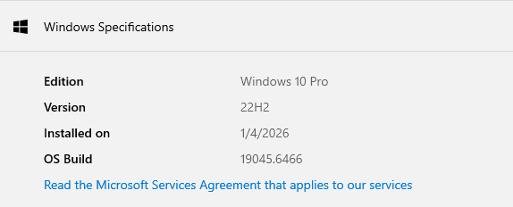

ຄວາມຮູ້ພື້ນຖານເກັບກັບ Desktop
ພື້ນຖານ Desktop ຕ່າງໆທີ່ຈະຊ່ວຍຕັ້ງຄ່າໜ້າ Desktop ໃຫ້ສະດວກສະບາຍຫຼາຍຂື້ນ
ຕົວຢ່າງ ແລະ ການຕັ້ງຄ່າທັງໝົດນີ້ເປັນຂອງ windows 10 ສຳຫຼັບ window 11 ອາດຈະມີຄວາມແຕກຕ່າງກັນໃນບາງສ່ວນ
Version Window
ການຮູ້ເວີຊັ້ນ window ຈະຊ່ວຍໃຫ້ເຮົາຮູ້ວ່າຈະຕ້ອງ ໂຫຼດໂປຣແກຣມເວີຊັນໃດ , ການຕັ້ງຄ່າແບບໃດ , ແລ້ວ ອື່ນໆອິກຫຼາຍຢ່າງທີ່ສຳຄັນໃນການໃຊ້ຄອມຂອງເຮົາ.
ແລ້ວການເບີງເວີຊັນຂອງ window ກໍມີຫຼາຍວິທີດ້ວຍກັນ ເຊັ້ນ:
-
ເບີ່ງໃນຕັ້ງຄ່າ:
ໄປທີ່ຕັ້ງຄ່າ → System → ເລື່ອງ side menu ໄປລຸ່ມສຸດ → ກົດ About → ເລື່ອນຈໍລົງໄປລຸ່ມສຸດໃນແຖບເມນູຊື່ວ່າ → Windows Specifications → ເບີ່ງຢູ່ໃນຄຳວ່າ → Edition

-
ເບີ່ງຜ່ານ window + R
ກົດ window key + R → ພີມ winver → ກົດປຸ່ມ Enter → ແລ້ວສາມາດເບິ່ງໄດ້ເລຍ
ການເພິ່ມ Windows system icons ຕ່າງໆ
Windows system icons ແມ່ນໂປຣແກຮມຂອງບະບົບທີ່ສາມາດຕັ້ງຄ່າ ແລະ ເບີ່ງຂໍ້ມູນໃນສ່ວນຕ່າງໆໄດ້ຫຼາຍຢ່າງ
Windows system icons ທີ່ຈະແນະນຳໃຫ້ມີ: This pc , Control panel , Recycle Bin
-
This Pc
This PC ແມ່ນສ່ວນໜຶ່ງຂອງລະບົບປະຕິບັດການ Windows ທີ່ໃຊ້ສຳລັບເຂົ້າເບິ່ງ ແລະ ຈັດການຂໍ້ມູນພາຍໃນຄອມພິວເຕີ ເຊັ່ນ: ເຂົ້າເບິ່ງໄຟລ໌ ແລະ ໂຟນເດີ ແບບດຽວກັບ File Explorer , ເບິ່ງພື້ນທີ່ຈັດເກັບຂອງ Drive , ເຂົ້າເຖິງອຸປະກອນຈັດເກັບຂໍ້ມູນຕ່າງໆ ເຊັ້ນ: ເວລາຕໍ່ ໂທລະສັບເຂົ້າຄອມ ຫຼື ຕໍ່ USB ໃຊ້
-
Control Panel
Control Panel ແມ່ນໜຶ່ງໃນເຄື່ອງມືຂອງລະບົບປະຕິບັດການ Windows ທີ່ໃຊ້ສຳລັບຕັ້ງຄ່າ ແລະ ຄວບຄຸມການເຮັດວຽກຕ່າງໆ ຂອງຄອມພິວເຕີ ເຊັ່ນ: ວັນທີ່ເດືອນປີ , ລະບົບສຽງ, ເຄືອຂ່າຍ, ການລົບໂປຣແກຣມ ແລະ ອຸປະກອນຕ່າງໆ
-
Recycle Bin
Recycle Bin ແມ່ນບ່ອນເກັບໄຟລ໌ ແລະ ໂຟນເດີທີ່ຖືກລຶບອອກຈາກຄອມພິວເຕີຊົ່ວຄາວ ເພື່ອໃຫ້ຜູ້ໃຊ້ສາມາດກູ້ຄືນໄຟລ໌ໄດ້ ຫາກລຶບຜິດ
-
ວິທີ່ການເພີ່ມ
ຂັ້ນຕອນການເພີ່ມ Windows system icons ເຂົ້າມາໃນ Desktop ມີດັ່ງນີ້:
ຄິກຂວາທີ່ desktop → ເລື່ອກ Personalize → ເລືອກ Themes ທີ່ Side menu → ເບີ່ງທີ່ເມນູ Related Setting ທາງດ້ານຂວາ → ແລ້ວກົດ Desktop icon setting → ໃນແຖບ desktop icon → ຕິກເລືອກຕາມໃຈເລຍ → ກົດ Apply → ກົດ Ok
ການເພິ່ມ Icon program ຕ່າງໆ
ບາງໂປຣແກຣມທີເຮົາໂຫຼດມາອາດຈະບໍ່ໄດ້ເພີ່ມ icon ລົງມາໃນ desktop ເລຍ ແລະ ຖ້າເຮົາຢາກໃຫ້ມີຢູ່ໃນ desktop ເຮົາສາມາດເອົາມາໄດ້
-
ວິທີ່ການເພີ່ມ
ຂັ້ນຕອນການເພີ່ມ icon ຕ່າງໆ ເຂົ້າມາໃນ Desktop ມີດັ່ງນີ້:
ໄປທີ່ໜ້າ Start Menu (ກົດ window ໃນຄິບ໊ອກ ຫຼື ໃນ taskbar) → ຊອກຫາ program ທີ່ເຮົາຕ້ອງການ ຫຼື ພີມຄົນຫາເລຍ → ແລ້ວລາກລົງມາທີ່ desktop ເລຍ
Folder ໃນໜ້າ desktop
ເຮົາສາມາດສ້າງ folder ແລະ ປຽນ icon ຂອງ folder
-
ວິທີ່ການເພີ່ມ folder ໃນ desktop ຈະມາແນະນຳໃນ 2 ວີທີຄື:
ທົ່ວໄປ : ຄິກຂວາທີ່ໜ້າ desktop → ກົດ new → ເລືອກ folder
short cut : Ctrl + Shitf + N
-
ວິທີປຽນ icon ຂອງ folder
ມີຂັ້ນຕອນດັ່ງນີ້: ຄິກຂວາທີ່ folder → ເລືອກ properties → ເລືອກ Cutomize → ກົດ Change Icon → ເລືອກຕາມໃຈ → ກົດ Apply → ກົດ Ok
ການແບບຂະໜາດ Program icon ຫຼຶ ຂະໜາດ icon app ຕ່າງໆ ໃນໜ້າ desktop
ຈະເປັນການຊ່ວຍໃຫ້ການໃຊ້ງານຄອມພິວເຕີສະດວກຫຼາຍຂຶ້ນ ຕາມຄວາມຕ້ອງການຂອງຜູ້ໃຊ້
ຂະໝາດຂອງ Program icon ຕ່າງໆໃນໜ້າ desktop ຈະມີດັ່ງນີ້:
-
Large Icons
ຈະເປັນຂະໜາດທີໃຫຍ່ຫຼາຍ ເໝາະສຳຫຼັບ ຄົນທີ່ຕ້ອງການໃຫ້ icon ໃຫຍ່ໆ ຫຼື ຄົນທີ່ມີບັນຫາທາງດ້ານສາຍຕາ
-
Medium Icons
ເປັນຂະໜາດກາງ ເໝາະສຳຫຼັບການໃຊ້ງານທົ່ວໆໄປ
-
Small Icons
ເປັນຂະໜາດນ້ອຍ ເຮັດໃຫ້ການຈັດລະບຽບ ໜ້າ desktop ງ່າຍ ແລະ ເປັນລະບຽບຫຼາຍຂື້ນ
-
ວິທີ່ການປັບ
ຂັ້ນຕອນການປັບ ຂະໜາດ icon ໃນ ໜ້າ desktop ມີດັ່ງນີ້:
ຄິກຂວາທີ່ໜ້າ desktop → ກົດ View → ເບີ່ງໃນແຖວເມນູເທີງສູດແລ້ວເລື່ອກຕາມໃຈໄດ້ເລຍ
ການປັບການຕັ້ງຕຳແໜ່ງຂອງ Program icon
ນອກຈາການປັບຂະໜາດ Program icon ເພື່ອໃຫ້ desktop ຂອງເຮົາເປັນລະບຽບຫຼາຍຂື້ນແລ້ວເຮົາຍັງສາມາດຍ້າຍຄຳແໜ່ງຂອງ iocn ຕ່າງໆເພື່ອໃຫ້ເປັນລະບຽບຫຼາຍຂື້ນ
ຮູບແບບ ການປັບຕຳແໜ່ງຂອງ Program icon ຈະມີດັ່ງນີ້:
-
ຖ້າເຮົາຕິກ Auto arrange icons
ແບບນີ້ຈະຈັດອັດນໂນມັນ ແລະ ເຮົາຈະບໍ່ສາມາດປັບຕຳແໜ່ງຕາມໃຈໄດ້
-
ຖ້າເຮົາຕິກ Align icons to grid
ແບບນີ້ເຮົາຈະສາມາດ ປັດຕຳແໜ່ງຕາມໄດ້ ແຕ່ກໍຍັງຢູ່ໃນຮູບແບບຕາຕະລາງຢູ່
-
ແລະ ຖານບໍ່ຢາກມີ program icon ຕ່າງໆຢູ່ໃນໜ້າຈໍ່ກໍສາມາດ ປິດໄດ້ໂດຍການ ເອົາຕິກ Show desktop icons ອອກ
ຈະເປັນການປິດ ບໍ່ໃຫ້ ມີ program icon ໃດເລຍຢູ່ໃນໜ້າຈໍ
-
ວິທີ່ການປັບ
ຂັ້ນຕອນການປັບ ຮູບແບບການປັບ icon ໃນ ໜ້າ desktop ມີດັ່ງນີ້:
ຄິກຂວາທີ່ໜ້າ desktop → ກົດ View → ເບີ່ງໃນແຖວເມນູແຖວກາງແລ້ວເລື່ອກຕາມໃຈໄດ້ເລຍ
ປຽນ Program ຫຼຶ desktop ດ້ວຍ Touchpad
ສຳຫຼັບຄົນທີ່ໃຊ້ notebook ແລ້ວໃຊ້ Touchpad ເປັນຫຼັກສາມາດໄປຕັ້ງຕ່າງໃຫ້ໃຊ້ 3 ຫຼື 4 ນິວໃນການປຽນ Program ຫຼຶ ໜ້າ desktop ໄດ້
ໂດຍທົ່ວໄປແລ້ວ ໃຊ້ 3 ນິວເລື່ອນໄປທາງຊ້າຍ ຫຼື ຂວາ ຈະເປັນການປຽນ program ແລະ ໃຊ້ 4 ນິ້ວເລື່ອນຊ້າຍ ຫຼື ຂວາ ໃນການປຽນ Desktop
ສຳຫຼັບຄົນທີ່ຢາກປຽນເປັນແບບອື່ນໆສາມາດໄປຕັ້ງຄ່າໄດ້ດັ່ງນີ້:
ໄປທີ່ຕັ້ງຄ່າ → ໄປທີ່ Devices → ເລືອກ touchpad ໃນ side menu → ແລ້ວເລື່ອກໄປທີ່ Three-finger gestures ຫຼື Four-finger gestures
ພາກສ່ວນແນະນຳ
ຈະເປັນຄຳແນະນຳ ແລະ ບົບຮຽນເພີ່ມເຕີມ
ປັບໃຫ້ເປັນ ປຽນລະບຽບ ແລະ ເປັນແບບທີ່ເຮົາທະໜັດ
ການປັບໃຫ້ເປັນລະບຽບ ແລະ ຖະໜັດຈະຊ່ວຍໃຫ້ ການເຮັດວຽກ ຫຼື ເຮັດສິງຕ່າງໆ ໃນຄອມງ່າຍດາຍ ແລະ ສະດວກສະບາຍຫຼາຍຂື້ນ